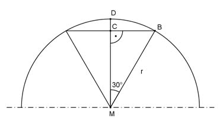

Aufgabe 376 Damit eine Holzkugel mit einem Durchmesser von 8 cm auf ein Rundholz mit kegeliger Spitze geleimt werden kann, ist eine Aussparung in der Form eines Sektors mit einem Kegelöffungswinkel von 60° nötig. Wie groß ist der Abfall A?  Im Dreieck MBC gilt: r = MB = 8 cm/2 = 4 cm MC cos 30° = ---- |*MB MB MC = MB * cos 30° = 4 cm * 0,866 = 3,46 cm DC = 4 cm - 3,46 cm = 0,54 cm = h Volumen des Segmentes = Abfall A: 2 2 A = --- * л * r² * h = --- * л * 4² cm² * 0,54 cm = 18,1 cm³ 3 3